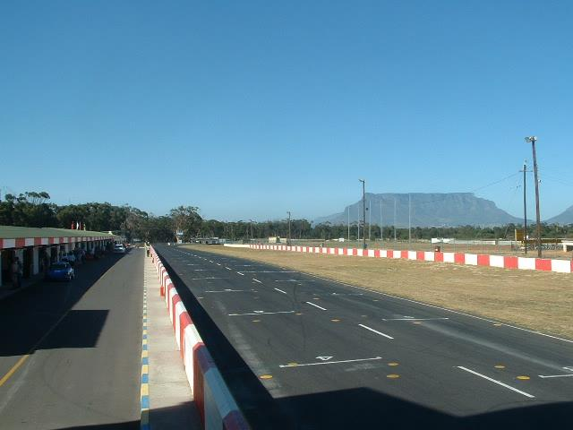
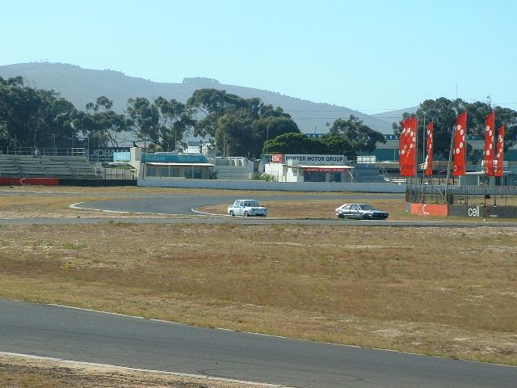
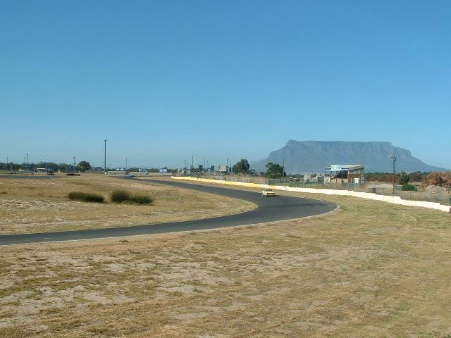
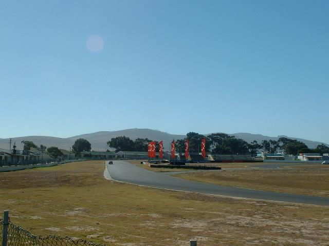

Letters on the map represent the location of where the pictures were taken. || Page 1 | Page 2
Killarney - Present Circuit [Page 1 of 2]
|| Contents | Original circuit photos | Present circuit photos || Home ||
Letters on the map represent the location of where the pictures were taken. || Page 1 | Page 2
Return to racingcircuits.net's Photo Archive Main Index

A) Main straight at start/finish line. Main pit facilities and pit lane on the left.

B) Cars cornering at Conti (formerly also known as Hoal's Hook). This is the first corner
after the start.

C) Car entering Shell corner (formerly also known as Damps Dip). Engen corner (ex-Quarry
Corner) in the background.

D) Exit of Shell corner (Damps Dip), with view down the Tygerberg Straight and heading
towards Sabat corner (Malmesbury Sweep).
Text & Graphics ©Marius Matthee. Reproduced here with kind permission.